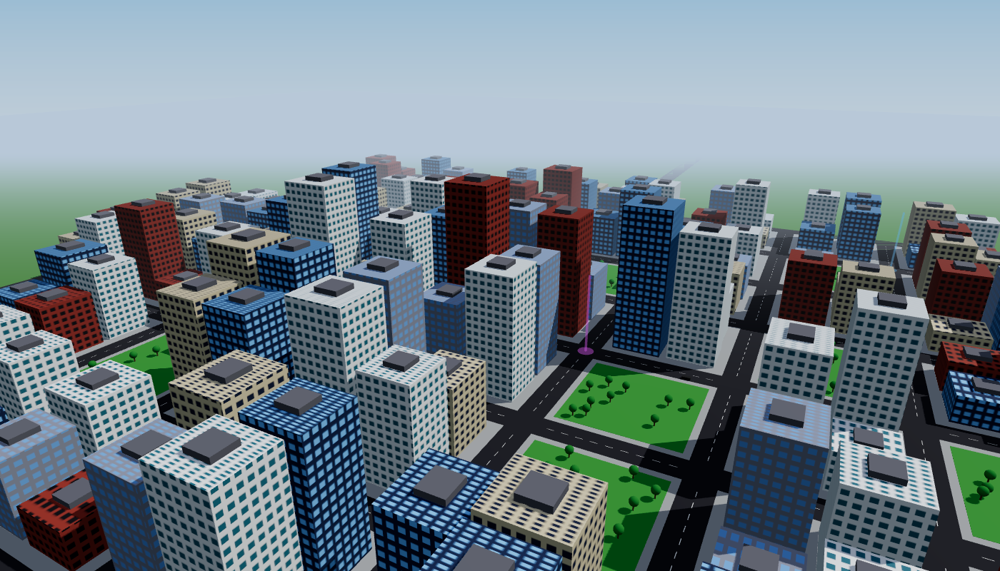

<title>Car Game Code Kit</title>
<meta name="claude:viewport-fit-sides" content="cover">
<link rel="stylesheet" href="https://fonts.googleapis.com/css2?family=Space+Grotesk:wght@500;700&family=Inter:wght@400;600&family=JetBrains+Mono:wght@400&display=swap">
<style>
/* Layout: one reading column: steps first, then two code panels with big copy buttons. */
:root {
  --bg: #f3f4f1; --panel: #ffffff; --ink: #1b1d1a; --muted: #5f6659; --line: #d9dcd3;
  --accent: #e0461b; --accent-ink: #ffffff; --code-bg: #15171a; --code-ink: #e6e8e3; --ok: #2f8a3e;
  --font-display: "Space Grotesk", system-ui, sans-serif; --font-body: "Inter", system-ui, sans-serif;
  --font-code: "JetBrains Mono", ui-monospace, Menlo, Consolas, monospace;
}
@media (prefers-color-scheme: dark) { :root:not([data-theme="light"]) {
  --bg: #121412; --panel: #1b1e1b; --ink: #ecefe8; --muted: #a2a99c; --line: #2e332d;
  --accent: #ff6a3d; --accent-ink: #160a05; --code-bg: #0b0c0d; --code-ink: #e6e8e3; --ok: #5fc46f; color-scheme: dark; } }
:root[data-theme="dark"] { --bg: #121412; --panel: #1b1e1b; --ink: #ecefe8; --muted: #a2a99c; --line: #2e332d;
  --accent: #ff6a3d; --accent-ink: #160a05; --code-bg: #0b0c0d; --code-ink: #e6e8e3; --ok: #5fc46f; color-scheme: dark; }
body { background: var(--bg); color: var(--ink); font: 16px/1.55 var(--font-body);
  padding-left: max(16px, env(safe-area-inset-left, 0px)); padding-right: max(16px, env(safe-area-inset-right, 0px)); padding-block: 28px 60px; }
main { max-width: 900px; margin: 0 auto; display: flex; flex-direction: column; gap: 28px; }
h1 { font: 700 clamp(30px, 5vw, 44px)/1.05 var(--font-display); margin: 0; letter-spacing: -0.02em; text-wrap: balance; }
h2 { font: 700 24px/1.2 var(--font-display); margin: 0; }
.lead { color: var(--muted); margin: 8px 0 0; max-width: 65ch; }
img.hero { width: 100%; border-radius: 12px; border: 1px solid var(--line); display: block; }
ol.steps { margin: 0; padding-left: 1.3em; display: grid; gap: 10px; }
ol.steps li { padding-left: 4px; }
kbd { font: 13px var(--font-code); border: 1px solid var(--line); border-bottom-width: 2px; border-radius: 5px; padding: 1px 6px; background: var(--panel); }
.controls { display: flex; flex-wrap: wrap; gap: 8px 18px; color: var(--muted); font-size: 15px; }
.file { background: var(--panel); border: 1px solid var(--line); border-radius: 12px; overflow: hidden; min-width: 0; }
.file header { display: flex; align-items: center; gap: 12px; flex-wrap: wrap; padding: 14px 16px; border-bottom: 1px solid var(--line); }
.file header div { margin-right: auto; min-width: 0; }
.file header b { font: 700 18px var(--font-display); }
.file header span { display: block; color: var(--muted); font-size: 14px; }
button.copy { font: 600 16px var(--font-body); background: var(--accent); color: var(--accent-ink); border: 0; border-radius: 9px; padding: 11px 20px; cursor: pointer; }
button.copy:focus-visible { outline: 3px solid var(--ink); outline-offset: 2px; }
button.copy.done { background: var(--ok); }
pre { margin: 0; max-height: 420px; overflow: auto; background: var(--code-bg); color: var(--code-ink); font: 13px/1.5 var(--font-code); padding: 16px; tab-size: 4; }
.note { color: var(--muted); font-size: 14px; }
</style>
<main>
  <div>
    <h1>Car Game Code Kit</h1>
    <p class="lead">One script for your whole Godot game: a city with roads, buildings, people, jobs and a car shop, plus 6 cars you can buy with the money you earn.</p>
  </div>
  
  <section>
    <h2>Steps</h2>
    <ol class="steps">
      <li>In the <b>Scene</b> panel on the left, right-click <b>Car</b> → <b>Delete Node(s)</b> → <b>OK</b>. The script makes a new car by itself.</li>
      <li>Right-click <b>World</b> → <b>Attach Script</b>. If it says World already has a script, that's fine: it opens it. Otherwise click <b>Create</b>.</li>
      <li>Click in the code, press <kbd>Ctrl</kbd>+<kbd>A</kbd>, then <kbd>Delete</kbd>. Click <b>Copy game code</b> below and paste with <kbd>Ctrl</kbd>+<kbd>V</kbd>.</li>
      <li>Click <b>Edit → Indentation → Convert Indent to Tabs</b>, then <kbd>Ctrl</kbd>+<kbd>S</kbd>.</li>
      <li>Press <kbd>F6</kbd>, click <b>Input</b> in the game window, and drive.</li>
    </ol>
  </section>
  <section>
    <h2>How to play</h2>
    <div class="controls">
      <span><kbd>↑</kbd> gas</span><span><kbd>↓</kbd> brake</span><span><kbd>←</kbd><kbd>→</kbd> steer</span><span><kbd>Shift</kbd> nitro</span>
      <span><kbd>Space</kbd> drift</span><span><kbd>R</kbd> reset</span><span><kbd>J</kbd> get a job</span><span><kbd>1</kbd>–<kbd>6</kbd> buy cars in the shop</span>
    </div>
    <p class="note">Blue lights are job centers. Stop inside one to get work. Follow the yellow arrow: pick up at the yellow light, stop at the green light, get paid. Faster delivery pays more. The purple light is the car shop: stop inside it and press a number. Your money and cars save automatically.</p>
  </section>
  <section class="file">
    <header><div><b>game.gd</b><span>The whole game in one script. Goes on World.</span></div>
      <button class="copy" type="button" data-target="game-code" id="copy-game">Copy game code</button></header>
    <pre id="game-code">extends Node3D
# ===================================================================
#  CAR CITY - the whole game in one script. Put this on the World node.
#  It builds the city, the people, the jobs, the car shop AND your car.
#
#  Controls: Up = gas, Down = brake/reverse, Left/Right = steer
#            Shift = NITRO, Space = drift, R = reset
#            J = get a job, 1-6 = buy cars when parked in the CAR SHOP light
# ===================================================================

const BLOCK := 70.0          # distance between roads
const ROAD := 12.0           # road width
const BLOCKS := 8            # city is 8 x 8 blocks
const HIGHWAY_LEN := 3000.0  # the long road
const SAVE_PATH := &quot;user://save.cfg&quot;

var car   # the player car (set in _ready)
var g := 0.5                 # height of the ground&#x27;s surface
var half := 0.0
var rng := RandomNumberGenerator.new()
var road_points: Array = []
var people: Array = []
var mats := {}
var building_mats: Array = []

var money := 0
var owned: Array = [0]
var current_model := 0

var job_kind := &quot;&quot;
var job_stage := &quot;&quot;
var job_pickup := Vector3.ZERO
var job_drop := Vector3.ZERO
var job_time := 0.0
var job_route := 0.0
var job_marker: Node3D
var pickup_thing: Node3D
var arrow: Node3D
var job_centers: Array = []
var shop_pos := Vector3.ZERO
var shop_open := false
var waiting_to_leave := false

var money_label: Label
var job_label: Label
var msg_label: Label
var msg_time := 0.0
var shop_panel: PanelContainer
var shop_text: Label


func _ready():
	rng.randomize()
	half = BLOCKS * BLOCK / 2.0
	spawn_car()
	setup_ground()
	make_building_materials()
	build_roads()
	build_blocks()
	build_highway()
	build_parked_cars(30)
	build_people(70)
	build_job_places()
	make_hud()
	load_game()
	if car:
		car.global_transform = Transform3D(Basis(), Vector3(0, g + 1.2, 0))
		car.start_transform = car.global_transform
		if not owned.has(current_model):
			current_model = 0
		car.apply_model(current_model)
	show_msg(&quot;Press J for a job, or stop in a blue JOBS light!&quot;, 6.0)


func _process(delta):
	if car == null:
		return
	update_people(delta)
	update_jobs(delta)
	update_shop()
	update_hud(delta)


func _input(event):
	if event is InputEventKey and event.pressed and not event.echo:
		if event.keycode == KEY_J and job_kind == &quot;&quot;:
			start_job()
		if shop_open:
			var index = event.keycode - KEY_1
			if index &gt;= 0 and index &lt; car.models.size():
				buy_or_select(index)


# Builds the player&#x27;s car: body, 4 wheels and a camera
func spawn_car():
	var old_car = get_node_or_null(&quot;Car&quot;)
	if old_car:
		old_car.queue_free()
	car = PlayerCar.new()
	car.name = &quot;PlayerCar&quot;
	car.mass = 500.0
	car.position = Vector3(0, 3, 0)
	var col = CollisionShape3D.new()
	var shape = BoxShape3D.new()
	shape.size = Vector3(1.6, 0.6, 3.2)
	col.shape = shape
	car.add_child(col)
	for spot in [Vector3(0.8, 0, 1.3), Vector3(-0.8, 0, 1.3), Vector3(0.8, 0, -1.3), Vector3(-0.8, 0, -1.3)]:
		var wheel = VehicleWheel3D.new()
		wheel.position = spot
		wheel.wheel_radius = 0.4
		wheel.use_as_steering = spot.z &gt; 0.0
		wheel.use_as_traction = spot.z &lt; 0.0
		car.add_child(wheel)
	var camera = Camera3D.new()
	camera.name = &quot;Camera3D&quot;
	camera.position = Vector3(0, 3, -7)
	camera.current = true
	car.add_child(camera)
	add_child(car)


# ================= BUILDING THE WORLD =================

func mat(key: String, color: Color, rough := 0.9) -&gt; StandardMaterial3D:
	if not mats.has(key):
		var m = StandardMaterial3D.new()
		m.albedo_color = color
		m.roughness = rough
		mats[key] = m
	return mats[key]


func glow_mat(color: Color, alpha := 1.0) -&gt; StandardMaterial3D:
	var m = StandardMaterial3D.new()
	m.albedo_color = Color(color.r, color.g, color.b, alpha)
	m.emission_enabled = true
	m.emission = color
	m.emission_energy_multiplier = 2.0
	m.shading_mode = BaseMaterial3D.SHADING_MODE_UNSHADED
	if alpha &lt; 1.0:
		m.transparency = BaseMaterial3D.TRANSPARENCY_ALPHA
	return m


func box(parent: Node, size: Vector3, pos: Vector3, material: Material, solid := false) -&gt; Node3D:
	var mesh_node = MeshInstance3D.new()
	var shape = BoxMesh.new()
	shape.size = size
	mesh_node.mesh = shape
	mesh_node.material_override = material
	if solid:
		var body = StaticBody3D.new()
		body.position = pos
		parent.add_child(body)
		var col = CollisionShape3D.new()
		var box_shape = BoxShape3D.new()
		box_shape.size = size
		col.shape = box_shape
		body.add_child(col)
		body.add_child(mesh_node)
		return body
	mesh_node.position = pos
	parent.add_child(mesh_node)
	return mesh_node


func add_multimesh(mesh: Mesh, material: Material, transforms: Array):
	var mm = MultiMesh.new()
	mm.transform_format = MultiMesh.TRANSFORM_3D
	mm.mesh = mesh
	mm.instance_count = transforms.size()
	for i in transforms.size():
		mm.set_instance_transform(i, transforms[i])
	var node = MultiMeshInstance3D.new()
	node.multimesh = mm
	node.material_override = material
	add_child(node)


func setup_ground():
	var ground = get_node_or_null(&quot;Ground&quot;)
	if ground:
		ground.size = Vector3(9000, 1, 9000)
		ground.material = mat(&quot;grass&quot;, Color(0.3, 0.5, 0.22))
		g = ground.position.y + ground.size.y / 2.0


# Building walls with windows, drawn into a tiny picture that repeats
func make_building_materials():
	var styles = [
		[Color(0.82, 0.76, 0.62), Color(0.12, 0.18, 0.28)],
		[Color(0.55, 0.56, 0.6), Color(0.45, 0.65, 0.85)],
		[Color(0.6, 0.25, 0.18), Color(0.1, 0.1, 0.12)],
		[Color(0.92, 0.92, 0.9), Color(0.2, 0.45, 0.5)],
		[Color(0.12, 0.2, 0.32), Color(0.5, 0.75, 0.95)],
	]
	for st in styles:
		var img = Image.create_empty(32, 32, false, Image.FORMAT_RGBA8)
		img.fill(st[0])
		img.fill_rect(Rect2i(6, 7, 20, 17), st[1])
		var m = StandardMaterial3D.new()
		m.albedo_texture = ImageTexture.create_from_image(img)
		m.uv1_triplanar = true
		m.uv1_scale = Vector3(0.3, 0.3, 0.3)
		m.texture_filter = BaseMaterial3D.TEXTURE_FILTER_NEAREST_WITH_MIPMAPS
		m.roughness = 0.7
		building_mats.append(m)


func build_roads():
	var size = BLOCKS * BLOCK + ROAD
	box(self, Vector3(size, 0.02, size), Vector3(0, g + 0.01, 0), mat(&quot;asphalt&quot;, Color(0.16, 0.16, 0.18)))
	var dash = BoxMesh.new()
	dash.size = Vector3(0.25, 0.01, 3.0)
	var along_z = Basis()
	var along_x = Basis(Vector3.UP, PI / 2.0)
	var t: Array = []
	for i in range(BLOCKS + 1):
		var c = -half + i * BLOCK
		for j in range(BLOCKS):
			var p = -half + j * BLOCK + ROAD / 2.0 + 3.0
			var stop = -half + (j + 1) * BLOCK - ROAD / 2.0 - 3.0
			while p &lt; stop:
				t.append(Transform3D(along_z, Vector3(c, g + 0.03, p + 1.5)))
				t.append(Transform3D(along_x, Vector3(p + 1.5, g + 0.03, c)))
				p += 6.0
	add_multimesh(dash, mat(&quot;paint&quot;, Color(0.95, 0.95, 0.9), 0.5), t)
	for i in range(BLOCKS + 1):
		for j in range(BLOCKS + 1):
			road_points.append(Vector3(-half + i * BLOCK, g, -half + j * BLOCK))


func build_blocks():
	var inner = BLOCK - ROAD
	var trunks: Array = []
	var crowns: Array = []
	for i in range(BLOCKS):
		for j in range(BLOCKS):
			var cx = -half + BLOCK * (i + 0.5)
			var cz = -half + BLOCK * (j + 0.5)
			box(self, Vector3(inner, 0.06, inner), Vector3(cx, g + 0.03, cz), mat(&quot;sidewalk&quot;, Color(0.62, 0.62, 0.6)))
			if rng.randf() &lt; 0.18:
				box(self, Vector3(inner - 6, 0.08, inner - 6), Vector3(cx, g + 0.05, cz), mat(&quot;park&quot;, Color(0.25, 0.55, 0.2)))
				for _k in range(10):
					var tx = cx + rng.randf_range(-inner / 2.0 + 5, inner / 2.0 - 5)
					var tz = cz + rng.randf_range(-inner / 2.0 + 5, inner / 2.0 - 5)
					trunks.append(Transform3D(Basis(), Vector3(tx, g + 1.3, tz)))
					crowns.append(Transform3D(Basis(), Vector3(tx, g + 3.6, tz)))
			else:
				var lot = inner - 6.0
				var downtown = 1.0 + 1.5 * clamp(1.0 - Vector2(cx, cz).length() / half, 0.0, 1.0)
				for a in [-1.0, 1.0]:
					for b in [-1.0, 1.0]:
						var w = lot / 2.0 - 2.0 - rng.randf() * 4.0
						var d = lot / 2.0 - 2.0 - rng.randf() * 4.0
						var h = rng.randf_range(8.0, 40.0) * downtown
						var pos = Vector3(cx + a * lot / 4.0, g + h / 2.0, cz + b * lot / 4.0)
						var m = building_mats[rng.randi() % building_mats.size()]
						box(self, Vector3(w, h, d), pos, m, true)
						box(self, Vector3(w * 0.4, 2.0, d * 0.4), Vector3(pos.x, g + h + 1.0, pos.z), mat(&quot;roof&quot;, Color(0.4, 0.4, 0.42)))
	var trunk = CylinderMesh.new()
	trunk.top_radius = 0.2
	trunk.bottom_radius = 0.25
	trunk.height = 2.6
	var crown = SphereMesh.new()
	crown.radius = 1.7
	crown.height = 3.4
	if trunks.size() &gt; 0:
		add_multimesh(trunk, mat(&quot;trunk&quot;, Color(0.4, 0.27, 0.15)), trunks)
		add_multimesh(crown, mat(&quot;leaves&quot;, Color(0.2, 0.5, 0.18)), crowns)


func build_highway():
	var start_z = half + ROAD / 2.0
	var mid = start_z + HIGHWAY_LEN / 2.0
	box(self, Vector3(16, 0.02, HIGHWAY_LEN), Vector3(0, g + 0.012, mid), mat(&quot;asphalt&quot;, Color(0.16, 0.16, 0.18)))
	for x in [-7.4, 7.4]:
		box(self, Vector3(0.3, 0.01, HIGHWAY_LEN), Vector3(x, g + 0.03, mid), mat(&quot;paint&quot;, Color.WHITE))
	var dash = BoxMesh.new()
	dash.size = Vector3(0.3, 0.01, 4.0)
	var t: Array = []
	var z = start_z + 5.0
	while z &lt; start_z + HIGHWAY_LEN:
		t.append(Transform3D(Basis(), Vector3(0, g + 0.03, z)))
		z += 12.0
	add_multimesh(dash, mat(&quot;paint&quot;, Color.WHITE), t)
	for rz in [600.0, 1300.0, 2100.0, 2800.0]:
		add_ramp(start_z + rz)
	var sign_label = Label3D.new()
	sign_label.text = &quot;HIGHWAY  3 km  &gt;&gt;&gt;&quot;
	sign_label.font_size = 160
	sign_label.pixel_size = 0.02
	sign_label.position = Vector3(0, g + 9.0, start_z + 25.0)
	sign_label.rotation_degrees = Vector3(0, 180, 0)
	sign_label.outline_size = 24
	add_child(sign_label)
	for x in [-9.0, 9.0]:
		box(self, Vector3(0.5, 10.0, 0.5), Vector3(x, g + 5.0, start_z + 25.0), mat(&quot;pole&quot;, Color(0.3, 0.3, 0.32)), true)


func add_ramp(z: float):
	var length = 14.0
	var thick = 1.0
	var angle = deg_to_rad(12.0)
	var y = g - thick / 2.0 * cos(angle) + length / 2.0 * sin(angle)
	var ramp = box(self, Vector3(8.0, thick, length), Vector3(0, y, z), mat(&quot;ramp&quot;, Color(1.0, 0.5, 0.1)), true)
	ramp.rotation = Vector3(-angle, 0, 0)
	var label = Label3D.new()
	label.text = &quot;JUMP!&quot;
	label.font_size = 128
	label.pixel_size = 0.02
	label.billboard = BaseMaterial3D.BILLBOARD_ENABLED
	label.position = Vector3(0, g + 5.0, z - 20.0)
	label.outline_size = 20
	add_child(label)


func build_parked_cars(count: int):
	var colors = [Color(0.8, 0.1, 0.1), Color(0.1, 0.2, 0.6), Color(0.9, 0.9, 0.9), Color(0.15, 0.15, 0.15),
		Color(0.5, 0.5, 0.55), Color(0.1, 0.45, 0.2), Color(0.95, 0.7, 0.1)]
	var styles = [&quot;hatch&quot;, &quot;taxi&quot;, &quot;truck&quot;, &quot;sport&quot;]
	for _k in range(count):
		var i = rng.randi() % BLOCKS
		var j = rng.randi() % BLOCKS
		var cx = -half + BLOCK * (i + 0.5)
		var cz = -half + BLOCK * (j + 0.5)
		var edge = BLOCK / 2.0 - ROAD / 2.0 + 1.4
		var along = rng.randf_range(-20.0, 20.0)
		var side = rng.randi() % 4
		var pos = Vector3(cx + along, 0, cz + edge)
		var rot = PI / 2.0
		if side == 1:
			pos = Vector3(cx + along, 0, cz - edge)
		elif side == 2:
			pos = Vector3(cx + edge, 0, cz + along)
			rot = 0.0
		elif side == 3:
			pos = Vector3(cx - edge, 0, cz + along)
			rot = 0.0
		pos.y = g + 0.68
		var style = styles[rng.randi() % styles.size()]
		var color = colors[rng.randi() % colors.size()]
		var body = StaticBody3D.new()
		body.position = pos
		body.rotation = Vector3(0, rot, 0)
		add_child(body)
		var col = CollisionShape3D.new()
		var shape = BoxShape3D.new()
		var length = car.style_dims(style)[&quot;L&quot;]
		shape.size = Vector3(1.8, 1.2, length)
		col.shape = shape
		body.add_child(col)
		car.build_body(body, style, color)
		for wx in [-0.8, 0.8]:
			for wz in [-1.3, 1.3]:
				car.add_cylinder(body, 0.4, 0.3, Color(0.04, 0.04, 0.04), Vector3(wx * 1.1, -0.28, wz), Vector3(0, 0, 90))


# ================= PEOPLE =================

func build_person(shirt: Color) -&gt; Node3D:
	var skins = [Color(0.96, 0.8, 0.65), Color(0.78, 0.57, 0.4), Color(0.55, 0.36, 0.22), Color(0.36, 0.24, 0.15)]
	var hairs = [Color(0.1, 0.07, 0.05), Color(0.4, 0.25, 0.1), Color(0.85, 0.7, 0.3), Color(0.2, 0.2, 0.2)]
	var pants = [Color(0.15, 0.2, 0.4), Color(0.2, 0.2, 0.2), Color(0.45, 0.38, 0.28)]
	var skin = skins[rng.randi() % skins.size()]
	var person = Node3D.new()
	box(person, Vector3(0.32, 0.8, 0.22), Vector3(0, 0.4, 0), mat(&quot;pants&quot; + str(rng.randi() % 3), pants[rng.randi() % pants.size()]))
	box(person, Vector3(0.46, 0.62, 0.26), Vector3(0, 1.11, 0), mat_color(shirt))
	box(person, Vector3(0.12, 0.6, 0.14), Vector3(-0.3, 1.1, 0), mat_color(shirt))
	var arm = box(person, Vector3(0.12, 0.6, 0.14), Vector3(0.3, 1.1, 0), mat_color(shirt))
	var head = MeshInstance3D.new()
	var sphere = SphereMesh.new()
	sphere.radius = 0.16
	sphere.height = 0.32
	head.mesh = sphere
	head.material_override = mat_color(skin)
	head.position = Vector3(0, 1.6, 0)
	person.add_child(head)
	box(person, Vector3(0.3, 0.1, 0.3), Vector3(0, 1.74, 0), mat_color(hairs[rng.randi() % hairs.size()]))
	person.set_meta(&quot;arm&quot;, arm)
	return person


func mat_color(color: Color) -&gt; StandardMaterial3D:
	return mat(color.to_html(), color)


func build_people(count: int):
	var shirts = [Color(0.9, 0.2, 0.2), Color(0.2, 0.5, 0.9), Color(0.95, 0.85, 0.2), Color(0.2, 0.7, 0.3),
		Color(0.95, 0.95, 0.95), Color(0.6, 0.3, 0.7), Color(1.0, 0.5, 0.1)]
	var walk = (BLOCK - ROAD) / 2.0 - 1.5
	for _k in range(count):
		var i = rng.randi() % BLOCKS
		var j = rng.randi() % BLOCKS
		var c = Vector3(-half + BLOCK * (i + 0.5), g + 0.06, -half + BLOCK * (j + 0.5))
		var corners = [c + Vector3(-walk, 0, -walk), c + Vector3(walk, 0, -walk), c + Vector3(walk, 0, walk), c + Vector3(-walk, 0, walk)]
		var side = rng.randi() % 4
		var a = corners[side]
		var b = corners[(side + 1) % 4]
		var node = build_person(shirts[rng.randi() % shirts.size()])
		add_child(node)
		people.append({&quot;node&quot;: node, &quot;a&quot;: a, &quot;b&quot;: b, &quot;t&quot;: rng.randf(), &quot;dir&quot;: 1.0,
			&quot;speed&quot;: rng.randf_range(1.0, 1.8), &quot;off&quot;: Vector3.ZERO, &quot;phase&quot;: rng.randf() * 6.0})


func update_people(delta):
	var time = Time.get_ticks_msec() / 1000.0
	var car_pos = car.global_position
	var car_fast = car.linear_velocity.length() &gt; 2.0
	for p in people:
		var length = p[&quot;a&quot;].distance_to(p[&quot;b&quot;])
		p[&quot;t&quot;] += p[&quot;speed&quot;] * delta * p[&quot;dir&quot;] / length
		if p[&quot;t&quot;] &gt; 1.0:
			p[&quot;t&quot;] = 1.0
			p[&quot;dir&quot;] = -1.0
		elif p[&quot;t&quot;] &lt; 0.0:
			p[&quot;t&quot;] = 0.0
			p[&quot;dir&quot;] = 1.0
		var base = p[&quot;a&quot;].lerp(p[&quot;b&quot;], p[&quot;t&quot;])
		var away = base + p[&quot;off&quot;] - car_pos
		away.y = 0.0
		if car_fast and away.length() &lt; 7.0:
			p[&quot;off&quot;] += away.normalized() * 10.0 * delta     # jump out of the way!
		p[&quot;off&quot;] = p[&quot;off&quot;].move_toward(Vector3.ZERO, delta * 0.8)
		var node = p[&quot;node&quot;]
		node.position = base + p[&quot;off&quot;]
		node.position.y = g + 0.06 + abs(sin(time * 9.0 + p[&quot;phase&quot;])) * 0.06
		var dir = (p[&quot;b&quot;] - p[&quot;a&quot;]).normalized() * p[&quot;dir&quot;]
		node.rotation.y = atan2(dir.x, dir.z)


# ================= JOBS =================

func make_beam(color: Color, text: String) -&gt; Node3D:
	var root = Node3D.new()
	var m = glow_mat(color, 0.35)
	var ring = MeshInstance3D.new()
	var ring_shape = CylinderMesh.new()
	ring_shape.top_radius = 4.0
	ring_shape.bottom_radius = 4.0
	ring_shape.height = 0.2
	ring.mesh = ring_shape
	ring.material_override = m
	ring.position = Vector3(0, 0.1, 0)
	root.add_child(ring)
	var beam = MeshInstance3D.new()
	var beam_shape = CylinderMesh.new()
	beam_shape.top_radius = 0.6
	beam_shape.bottom_radius = 0.6
	beam_shape.height = 40.0
	beam.mesh = beam_shape
	beam.material_override = m
	beam.position = Vector3(0, 20.0, 0)
	root.add_child(beam)
	var label = Label3D.new()
	label.text = text
	label.font_size = 110
	label.pixel_size = 0.02
	label.billboard = BaseMaterial3D.BILLBOARD_ENABLED
	label.no_depth_test = true
	label.outline_size = 20
	label.position = Vector3(0, 6.0, 0)
	root.add_child(label)
	add_child(root)
	return root


func build_job_places():
	for p in [Vector3(0, g, BLOCK), Vector3(BLOCK * 3, g, -BLOCK * 2), Vector3(-BLOCK * 3, g, BLOCK * 3)]:
		var beam = make_beam(Color(0.2, 0.6, 1.0), &quot;JOBS&quot;)
		beam.position = p
		job_centers.append(p)
	shop_pos = Vector3(-BLOCK, g, 0)
	var shop = make_beam(Color(0.75, 0.3, 1.0), &quot;CAR SHOP&quot;)
	shop.position = shop_pos
	arrow = Node3D.new()
	var cone = MeshInstance3D.new()
	var cone_shape = CylinderMesh.new()
	cone_shape.top_radius = 0.0
	cone_shape.bottom_radius = 0.5
	cone_shape.height = 1.4
	cone.mesh = cone_shape
	cone.material_override = glow_mat(Color(1.0, 0.85, 0.1))
	cone.rotation_degrees = Vector3(-90, 0, 0)
	arrow.add_child(cone)
	add_child(arrow)
	arrow.visible = false


func flat_dist(a: Vector3, b: Vector3) -&gt; float:
	return Vector2(a.x - b.x, a.z - b.z).length()


func random_point_away_from(from: Vector3, min_dist: float) -&gt; Vector3:
	var p = road_points[0]
	for _k in range(60):
		p = road_points[rng.randi() % road_points.size()]
		if flat_dist(p, from) &gt;= min_dist:
			return p
	return p


func set_marker(pos: Vector3, color: Color, text: String):
	if job_marker:
		job_marker.queue_free()
	job_marker = make_beam(color, text)
	job_marker.position = pos


func start_job():
	job_kind = &quot;taxi&quot; if rng.randf() &lt; 0.5 else &quot;delivery&quot;
	job_pickup = random_point_away_from(car.global_position, 80.0)
	job_drop = random_point_away_from(job_pickup, 220.0)
	job_route = flat_dist(car.global_position, job_pickup) + flat_dist(job_pickup, job_drop)
	job_time = job_route / 10.0 + 30.0
	job_stage = &quot;pickup&quot;
	waiting_to_leave = true
	var corner = job_pickup + Vector3(ROAD / 2.0 + 1.0, 0.06, ROAD / 2.0 + 1.0)
	if job_kind == &quot;taxi&quot;:
		pickup_thing = build_person(Color(0.95, 0.4, 0.6))
		add_child(pickup_thing)
		pickup_thing.position = corner
		set_marker(job_pickup, Color(1.0, 0.85, 0.1), &quot;PASSENGER&quot;)
		show_msg(&quot;TAXI JOB! Pick up the passenger. Follow the arrow!&quot;, 4.0)
	else:
		pickup_thing = box(self, Vector3(1.0, 1.0, 1.0), corner + Vector3(0, 0.5, 0), mat(&quot;crate&quot;, Color(0.6, 0.42, 0.2)))
		set_marker(job_pickup, Color(1.0, 0.85, 0.1), &quot;PACKAGE&quot;)
		show_msg(&quot;DELIVERY JOB! Pick up the package. Follow the arrow!&quot;, 4.0)


func update_jobs(delta):
	var speed = car.linear_velocity.length()
	if job_kind == &quot;&quot;:
		arrow.visible = false
		job_label.text = &quot;Press J or stop in a blue JOBS light to get work&quot;
		var near_center = false
		for c in job_centers:
			if flat_dist(car.global_position, c) &lt; 8.0:
				near_center = true
		if near_center and not waiting_to_leave and speed &lt; 8.0:
			start_job()
		elif not near_center:
			waiting_to_leave = false
		return

	job_time -= delta
	var target = job_pickup if job_stage == &quot;pickup&quot; else job_drop
	var dist = flat_dist(car.global_position, target)
	var what = &quot;&quot;
	if job_stage == &quot;pickup&quot;:
		what = &quot;Pick up the passenger&quot; if job_kind == &quot;taxi&quot; else &quot;Pick up the package&quot;
	else:
		what = &quot;Drive the passenger to the green light&quot; if job_kind == &quot;taxi&quot; else &quot;Deliver to the green light&quot;
	job_label.text = what + &quot;   &quot; + str(int(dist)) + &quot; m   Time: &quot; + str(max(int(job_time), 0)) + &quot; s&quot;

	arrow.visible = true
	arrow.global_position = car.global_position + Vector3.UP * 2.8
	var look_target = Vector3(target.x, arrow.global_position.y, target.z)
	if flat_dist(arrow.global_position, look_target) &gt; 1.0:
		arrow.look_at(look_target, Vector3.UP)

	if job_stage == &quot;pickup&quot; and job_kind == &quot;taxi&quot; and pickup_thing:
		var arm = pickup_thing.get_meta(&quot;arm&quot;)
		arm.rotation.z = 2.5 + sin(Time.get_ticks_msec() / 150.0) * 0.4   # waving

	if dist &lt; 7.0 and speed &lt; 6.0:
		if job_stage == &quot;pickup&quot;:
			job_stage = &quot;drop&quot;
			if pickup_thing:
				pickup_thing.queue_free()
				pickup_thing = null
			set_marker(job_drop, Color(0.2, 1.0, 0.3), &quot;DROP OFF&quot;)
			show_msg(&quot;Got it! Now go to the green light!&quot;, 3.0)
		else:
			finish_job(true)
	elif job_time &lt;= 0.0:
		finish_job(false)


func finish_job(success: bool):
	if success:
		var pay = int(50.0 + job_route * 0.3 + max(job_time, 0.0) * 2.0)
		if job_kind == &quot;taxi&quot;:
			pay = int(pay * 1.3)
		money += pay
		show_msg(&quot;JOB DONE!  +$&quot; + str(pay), 4.0)
		save_game()
	else:
		show_msg(&quot;Too slow! Job failed.&quot;, 4.0)
	job_kind = &quot;&quot;
	if job_marker:
		job_marker.queue_free()
		job_marker = null
	if pickup_thing:
		pickup_thing.queue_free()
		pickup_thing = null


# ================= CAR SHOP =================

func update_shop():
	var near = flat_dist(car.global_position, shop_pos) &lt; 8.0
	if near and not shop_open and car.linear_velocity.length() &lt; 6.0:
		shop_open = true
		refresh_shop()
		shop_panel.visible = true
	elif not near and shop_open:
		shop_open = false
		shop_panel.visible = false


func refresh_shop():
	var text = &quot;CAR SHOP  -  press a number key\n\n&quot;
	for i in car.models.size():
		var m = car.models[i]
		var status = &quot;$&quot; + str(m[&quot;price&quot;])
		if i == current_model:
			status = &quot;DRIVING&quot;
		elif owned.has(i):
			status = &quot;OWNED - press to drive&quot;
		text += str(i + 1) + &quot;.  &quot; + m[&quot;name&quot;] + &quot;   (&quot; + str(int(m[&quot;top&quot;])) + &quot; km/h)   &quot; + status + &quot;\n&quot;
	text += &quot;\nYour money: $&quot; + str(money)
	shop_text.text = text


func buy_or_select(index: int):
	var m = car.models[index]
	if owned.has(index):
		current_model = index
	elif money &gt;= m[&quot;price&quot;]:
		money -= m[&quot;price&quot;]
		owned.append(index)
		current_model = index
		show_msg(&quot;You bought the &quot; + m[&quot;name&quot;] + &quot;!&quot;, 4.0)
	else:
		show_msg(&quot;Not enough money! You need $&quot; + str(m[&quot;price&quot;]), 3.0)
		return
	car.apply_model(current_model)
	save_game()
	refresh_shop()


# ================= SCREEN TEXT =================

func make_label(size: int, color: Color) -&gt; Label:
	var label = Label.new()
	label.add_theme_font_size_override(&quot;font_size&quot;, size)
	label.add_theme_color_override(&quot;font_color&quot;, color)
	label.add_theme_color_override(&quot;font_outline_color&quot;, Color.BLACK)
	label.add_theme_constant_override(&quot;outline_size&quot;, 10)
	return label


func make_hud():
	var layer = CanvasLayer.new()
	add_child(layer)
	money_label = make_label(48, Color(0.4, 1.0, 0.4))
	layer.add_child(money_label)
	job_label = make_label(24, Color.WHITE)
	job_label.horizontal_alignment = HORIZONTAL_ALIGNMENT_CENTER
	job_label.size = Vector2(900, 40)
	layer.add_child(job_label)
	msg_label = make_label(40, Color(1.0, 0.9, 0.2))
	msg_label.horizontal_alignment = HORIZONTAL_ALIGNMENT_CENTER
	msg_label.size = Vector2(1100, 60)
	layer.add_child(msg_label)
	shop_panel = PanelContainer.new()
	shop_panel.visible = false
	layer.add_child(shop_panel)
	shop_text = make_label(22, Color.WHITE)
	shop_panel.add_child(shop_text)


func update_hud(delta):
	var screen = get_viewport().get_visible_rect().size
	money_label.text = &quot;$&quot; + str(money)
	money_label.position = Vector2(screen.x - money_label.size.x - 30, 20)
	job_label.position = Vector2(screen.x / 2.0 - 450, 90)
	msg_label.position = Vector2(screen.x / 2.0 - 550, screen.y * 0.28)
	shop_panel.position = Vector2(screen.x / 2.0 - 330, screen.y * 0.4)
	if msg_time &gt; 0.0:
		msg_time -= delta
		if msg_time &lt;= 0.0:
			msg_label.text = &quot;&quot;


func show_msg(text: String, seconds: float):
	msg_label.text = text
	msg_time = seconds


# ================= SAVING =================

func save_game():
	var cf = ConfigFile.new()
	cf.set_value(&quot;game&quot;, &quot;money&quot;, money)
	cf.set_value(&quot;game&quot;, &quot;owned&quot;, owned)
	cf.set_value(&quot;game&quot;, &quot;model&quot;, current_model)
	cf.save(SAVE_PATH)


func load_game():
	var cf = ConfigFile.new()
	if cf.load(SAVE_PATH) == OK:
		money = cf.get_value(&quot;game&quot;, &quot;money&quot;, 0)
		owned = cf.get_value(&quot;game&quot;, &quot;owned&quot;, [0])
		current_model = cf.get_value(&quot;game&quot;, &quot;model&quot;, 0)


# ===================================================================
#  THE PLAYER CAR (a class inside this script)
# ===================================================================
class PlayerCar extends VehicleBody3D:
	# PLAYER CAR
	# Controls: Up = gas, Down = brake/reverse, Left/Right = steer
	#           Shift = NITRO, Space = handbrake (drift), R = reset

	var models = [
		{&quot;name&quot;: &quot;Starter Hatch&quot;, &quot;price&quot;: 0, &quot;power&quot;: 2400.0, &quot;top&quot;: 150.0, &quot;steer&quot;: 0.45,
			&quot;style&quot;: &quot;hatch&quot;, &quot;color&quot;: Color(0.15, 0.35, 0.8), &quot;pitch&quot;: 1.15},
		{&quot;name&quot;: &quot;City Taxi&quot;, &quot;price&quot;: 800, &quot;power&quot;: 2900.0, &quot;top&quot;: 170.0, &quot;steer&quot;: 0.42,
			&quot;style&quot;: &quot;taxi&quot;, &quot;color&quot;: Color(1.0, 0.78, 0.05), &quot;pitch&quot;: 1.0},
		{&quot;name&quot;: &quot;Pickup Truck&quot;, &quot;price&quot;: 1800, &quot;power&quot;: 3400.0, &quot;top&quot;: 175.0, &quot;steer&quot;: 0.4,
			&quot;style&quot;: &quot;truck&quot;, &quot;color&quot;: Color(0.2, 0.42, 0.25), &quot;pitch&quot;: 0.75},
		{&quot;name&quot;: &quot;Sports GT&quot;, &quot;price&quot;: 4000, &quot;power&quot;: 4300.0, &quot;top&quot;: 235.0, &quot;steer&quot;: 0.38,
			&quot;style&quot;: &quot;sport&quot;, &quot;color&quot;: Color(0.85, 0.08, 0.08), &quot;pitch&quot;: 1.2},
		{&quot;name&quot;: &quot;The Beast&quot;, &quot;price&quot;: 8000, &quot;power&quot;: 5300.0, &quot;top&quot;: 265.0, &quot;steer&quot;: 0.36,
			&quot;style&quot;: &quot;beast&quot;, &quot;color&quot;: Color(0.06, 0.06, 0.07), &quot;pitch&quot;: 0.9},
		{&quot;name&quot;: &quot;Hyper X&quot;, &quot;price&quot;: 15000, &quot;power&quot;: 6600.0, &quot;top&quot;: 320.0, &quot;steer&quot;: 0.34,
			&quot;style&quot;: &quot;super&quot;, &quot;color&quot;: Color(0.93, 0.93, 0.95), &quot;pitch&quot;: 1.35},
	]

	var engine_sound := true

	var model_index := 0
	var engine_power := 2400.0
	var top_speed_kmh := 150.0
	var max_steer := 0.45
	var nitro_power := 1.8
	var pitch_scale := 1.0

	var start_transform: Transform3D
	var wheels: Array = []
	var rear_wheels: Array = []
	var wheel_parts: Array = []
	var flames: Array = []
	var look: Node3D
	var nitro := 100.0
	var boosting := false
	var speed_label: Label
	var nitro_bar: ProgressBar
	var cam: Camera3D
	var engine_playback: AudioStreamGeneratorPlayback
	var engine_phase := 0.0
	var engine_pitch := 50.0


	func _ready():
		can_sleep = false
		start_transform = global_transform
		center_of_mass_mode = RigidBody3D.CENTER_OF_MASS_MODE_CUSTOM
		center_of_mass = Vector3(0, -0.5, 0)
		for wheel in get_children():
			if wheel is VehicleWheel3D:
				wheel.suspension_stiffness = 45.0
				wheel.wheel_rest_length = 0.3
				wheel.suspension_travel = 0.3
				wheel.damping_compression = 3.0
				wheel.damping_relaxation = 4.0
				wheel.wheel_friction_slip = 4.0
				wheels.append(wheel)
				if wheel.use_as_traction:
					rear_wheels.append(wheel)
		var old_body = get_node_or_null(&quot;Body&quot;)
		if old_body:
			old_body.visible = false
		make_hud()
		cam = get_node_or_null(&quot;Camera3D&quot;)
		if cam:
			cam.top_level = true
		if engine_sound:
			setup_engine_sound()
		apply_model(0)


	# Switch to one of the cars in &quot;models&quot;
	func apply_model(index: int):
		model_index = index
		var m = models[index]
		engine_power = m[&quot;power&quot;]
		top_speed_kmh = m[&quot;top&quot;]
		max_steer = m[&quot;steer&quot;]
		pitch_scale = m[&quot;pitch&quot;]
		if look:
			look.queue_free()
		for p in wheel_parts:
			p.queue_free()
		wheel_parts.clear()
		flames.clear()
		look = Node3D.new()
		add_child(look)
		build_body(look, m[&quot;style&quot;], m[&quot;color&quot;])
		var back_z = -style_dims(m[&quot;style&quot;])[&quot;L&quot;] / 2.0
		for x in [-0.4, 0.4]:
			var flame = add_box(look, Vector3(0.12, 0.12, 0.45), Color(0.2, 0.5, 1.0),
				Vector3(x, -0.22, back_z - 0.35), true)
			flame.visible = false
			flames.append(flame)
		var rim = Color(0.8, 0.8, 0.85)
		if m[&quot;style&quot;] == &quot;beast&quot;:
			rim = Color(0.9, 0.05, 0.05)
		for wheel in wheels:
			var side = sign(wheel.position.x)
			var r = wheel.wheel_radius
			wheel_parts.append(add_cylinder(wheel, r, 0.34, Color(0.04, 0.04, 0.04),
				Vector3(0.1 * side, 0, 0), Vector3(0, 0, 90)))
			wheel_parts.append(add_cylinder(wheel, r * 0.55, 0.36, rim,
				Vector3(0.1 * side, 0, 0), Vector3(0, 0, 90), 0.8))


	func _physics_process(delta):
		if global_position.y &lt; -10 or Input.is_key_pressed(KEY_R):
			reset_car()
			return

		var throttle = Input.get_axis(&quot;ui_down&quot;, &quot;ui_up&quot;)
		var turn = Input.get_axis(&quot;ui_right&quot;, &quot;ui_left&quot;)
		var forward_speed = linear_velocity.dot(global_transform.basis.z)
		var speed = linear_velocity.length()
		var kmh = abs(forward_speed) * 3.6

		boosting = Input.is_key_pressed(KEY_SHIFT) and nitro &gt; 0.0 and throttle &gt; 0.0
		if boosting:
			nitro = max(nitro - 30.0 * delta, 0.0)
		else:
			nitro = min(nitro + 10.0 * delta, 100.0)
		for flame in flames:
			flame.visible = boosting

		var power = engine_power
		var top = top_speed_kmh
		if boosting:
			power *= nitro_power
			top *= 1.3
		if throttle &gt; 0.0 and forward_speed &gt; 0.0:
			power *= clamp(1.0 - kmh / top, 0.0, 1.0)
		engine_force = throttle * power

		var steer_limit = lerp(max_steer, 0.1, clamp(kmh / 200.0, 0.0, 1.0))
		steering = move_toward(steering, turn * steer_limit, delta * 3.0)

		var drifting = Input.is_action_pressed(&quot;ui_accept&quot;)
		for wheel in rear_wheels:
			wheel.wheel_friction_slip = 1.2 if drifting else 4.0
			wheel.brake = 3.0 if drifting else 0.0

		apply_central_force(Vector3.DOWN * speed * speed * 0.8)

		speed_label.text = str(int(kmh)) + &quot; km/h&quot;
		nitro_bar.value = nitro


	func _process(delta):
		update_camera(delta)
		if engine_playback:
			update_engine_sound(delta)


	func reset_car():
		global_transform = start_transform
		linear_velocity = Vector3.ZERO
		angular_velocity = Vector3.ZERO
		nitro = 100.0


	func update_camera(delta):
		if cam == null:
			return
		var fwd = global_transform.basis.z
		fwd.y = 0.0
		if fwd.length() &lt; 0.1:
			fwd = Vector3.FORWARD
		fwd = fwd.normalized()
		var target = global_position - fwd * 7.5 + Vector3.UP * 3.0
		cam.global_position = cam.global_position.lerp(target, clamp(delta * 5.0, 0.0, 1.0))
		cam.look_at(global_position + fwd * 3.0 + Vector3.UP * 0.8, Vector3.UP)
		var want_fov = 70.0 + linear_velocity.length() * 0.35
		if boosting:
			want_fov += 12.0
		cam.fov = lerp(cam.fov, min(want_fov, 105.0), clamp(delta * 3.0, 0.0, 1.0))


	func make_hud():
		var layer = CanvasLayer.new()
		add_child(layer)
		speed_label = Label.new()
		speed_label.add_theme_font_size_override(&quot;font_size&quot;, 56)
		speed_label.add_theme_color_override(&quot;font_outline_color&quot;, Color.BLACK)
		speed_label.add_theme_constant_override(&quot;outline_size&quot;, 10)
		speed_label.position = Vector2(30, 20)
		layer.add_child(speed_label)
		var nitro_text = Label.new()
		nitro_text.text = &quot;NITRO (Shift)&quot;
		nitro_text.add_theme_font_size_override(&quot;font_size&quot;, 20)
		nitro_text.add_theme_color_override(&quot;font_outline_color&quot;, Color.BLACK)
		nitro_text.add_theme_constant_override(&quot;outline_size&quot;, 6)
		nitro_text.position = Vector2(32, 100)
		layer.add_child(nitro_text)
		nitro_bar = ProgressBar.new()
		nitro_bar.min_value = 0.0
		nitro_bar.max_value = 100.0
		nitro_bar.show_percentage = false
		nitro_bar.position = Vector2(30, 130)
		nitro_bar.size = Vector2(260, 22)
		nitro_bar.modulate = Color(0.4, 0.8, 1.0)
		layer.add_child(nitro_bar)


	func setup_engine_sound():
		var gen = AudioStreamGenerator.new()
		gen.mix_rate = 22050.0
		gen.buffer_length = 0.1
		var player = AudioStreamPlayer.new()
		player.stream = gen
		player.volume_db = -10.0
		add_child(player)
		player.play()
		engine_playback = player.get_stream_playback()


	func update_engine_sound(delta):
		var kmh = linear_velocity.length() * 3.6
		var gear_rev = fmod(kmh, 55.0) / 55.0
		var target = (45.0 + gear_rev * 110.0 + min(kmh, 220.0) * 0.15) * pitch_scale
		if boosting:
			target += 25.0
		engine_pitch = lerp(engine_pitch, target, clamp(delta * 6.0, 0.0, 1.0))
		var frames = engine_playback.get_frames_available()
		for _i in frames:
			engine_phase = fmod(engine_phase + engine_pitch / 22050.0, 1.0)
			var s = sin(engine_phase * TAU) * 0.5 + (engine_phase * 2.0 - 1.0) * 0.3
			engine_playback.push_frame(Vector2(s, s) * 0.4)


	# ---------- CAR LOOKS ----------
	# L = length, W = width, hb = lower body height, hc = cabin height,
	# cl = cabin length, cz = cabin position, ws = windscreen slope, rs = rear window slope
	func style_dims(style: String) -&gt; Dictionary:
		match style:
			&quot;hatch&quot;:
				return {&quot;L&quot;: 3.5, &quot;W&quot;: 1.7, &quot;hb&quot;: 0.58, &quot;hc&quot;: 0.5, &quot;cl&quot;: 1.5, &quot;cz&quot;: -0.45, &quot;ws&quot;: 0.6, &quot;rs&quot;: 0.15}
			&quot;taxi&quot;:
				return {&quot;L&quot;: 3.9, &quot;W&quot;: 1.74, &quot;hb&quot;: 0.55, &quot;hc&quot;: 0.46, &quot;cl&quot;: 1.6, &quot;cz&quot;: -0.2, &quot;ws&quot;: 0.7, &quot;rs&quot;: 0.55}
			&quot;truck&quot;:
				return {&quot;L&quot;: 4.1, &quot;W&quot;: 1.84, &quot;hb&quot;: 0.68, &quot;hc&quot;: 0.6, &quot;cl&quot;: 1.3, &quot;cz&quot;: 0.55, &quot;ws&quot;: 0.45, &quot;rs&quot;: 0.0}
			&quot;sport&quot;:
				return {&quot;L&quot;: 3.9, &quot;W&quot;: 1.8, &quot;hb&quot;: 0.5, &quot;hc&quot;: 0.38, &quot;cl&quot;: 1.3, &quot;cz&quot;: -0.35, &quot;ws&quot;: 0.85, &quot;rs&quot;: 0.7}
			&quot;beast&quot;:
				return {&quot;L&quot;: 3.6, &quot;W&quot;: 1.75, &quot;hb&quot;: 0.6, &quot;hc&quot;: 0.38, &quot;cl&quot;: 1.3, &quot;cz&quot;: -0.35, &quot;ws&quot;: 0.4, &quot;rs&quot;: 0.3}
			_:
				return {&quot;L&quot;: 4.0, &quot;W&quot;: 1.9, &quot;hb&quot;: 0.45, &quot;hc&quot;: 0.33, &quot;cl&quot;: 1.2, &quot;cz&quot;: -0.2, &quot;ws&quot;: 1.0, &quot;rs&quot;: 0.8}


	func build_body(parent: Node3D, style: String, color: Color):
		var d = style_dims(style)
		var L = d[&quot;L&quot;]
		var W = d[&quot;W&quot;]
		var hb = d[&quot;hb&quot;]
		var hc = d[&quot;hc&quot;]
		var cl = d[&quot;cl&quot;]
		var cz = d[&quot;cz&quot;]
		var glass = Color(0.05, 0.08, 0.13)
		var dark = Color(0.03, 0.03, 0.03)
		var chrome = Color(0.8, 0.8, 0.85)
		var top = -0.3 + hb
		var fz = L / 2.0
		var bz = -L / 2.0
		var cab_front = cz + cl / 2.0
		var cab_back = cz - cl / 2.0

		add_box(parent, Vector3(W, hb, L), color, Vector3(0, -0.3 + hb / 2.0, 0), false, 0.5)
		add_box(parent, Vector3(W - 0.12, hc, cl), color, Vector3(0, top + hc / 2.0, cz), false, 0.5)
		add_box(parent, Vector3(W - 0.1, hc * 0.62, cl - 0.25), glass, Vector3(0, top + hc * 0.48, cz))
		add_wedge(parent, d[&quot;ws&quot;], hc, W - 0.2, Vector3(0, top + hc / 2.0, cab_front + d[&quot;ws&quot;] / 2.0), 1.0, glass)
		if d[&quot;rs&quot;] &gt; 0.01:
			add_wedge(parent, d[&quot;rs&quot;], hc, W - 0.2, Vector3(0, top + hc / 2.0, cab_back - d[&quot;rs&quot;] / 2.0), 0.0, glass)

		add_box(parent, Vector3(W + 0.04, 0.16, 0.14), dark, Vector3(0, -0.24, fz))
		add_box(parent, Vector3(W + 0.04, 0.16, 0.14), dark, Vector3(0, -0.24, bz))
		add_box(parent, Vector3(W * 0.5, 0.14, 0.03), dark, Vector3(0, top - 0.15, fz + 0.01))
		add_box(parent, Vector3(W * 0.5, 0.025, 0.035), chrome, Vector3(0, top - 0.07, fz + 0.012), false, 0.9)
		for s in [-1.0, 1.0]:
			var x = s * (W / 2.0 - 0.28)
			add_box(parent, Vector3(0.36, 0.11, 0.04), Color(0.85, 0.92, 1.0), Vector3(x, top - 0.1, fz + 0.01), true)
			add_box(parent, Vector3(0.36, 0.1, 0.04), Color(1.0, 0.05, 0.02), Vector3(x, top - 0.1, bz - 0.01), true)
			add_box(parent, Vector3(0.16, 0.09, 0.07), color, Vector3(s * (W / 2.0 + 0.05), top + 0.12, cab_front - 0.05))
			add_box(parent, Vector3(0.02, 0.06, L * 0.7), dark, Vector3(s * (W / 2.0 + 0.005), -0.12, 0))
			add_box(parent, Vector3(0.02, hb * 0.75, 0.02), dark, Vector3(s * (W / 2.0 + 0.005), -0.3 + hb / 2.0, cz + cl * 0.1))
		add_box(parent, Vector3(0.42, 0.12, 0.02), Color(0.95, 0.95, 0.9), Vector3(0, -0.16, fz + 0.08))
		add_box(parent, Vector3(0.42, 0.12, 0.02), Color(0.95, 0.95, 0.9), Vector3(0, -0.16, bz - 0.08))

		match style:
			&quot;taxi&quot;:
				add_box(parent, Vector3(0.6, 0.18, 0.25), Color(1.0, 0.95, 0.7), Vector3(0, top + hc + 0.09, cz), true)
				for i in range(8):
					if i % 2 == 0:
						for s in [-1.0, 1.0]:
							add_box(parent, Vector3(0.02, 0.08, 0.25), dark, Vector3(s * (W / 2.0 + 0.006), top - 0.18, -1.0 + i * 0.25))
			&quot;truck&quot;:
				var bed_len = cab_back - bz - 0.1
				var bed_z = (cab_back + bz) / 2.0 - 0.05
				add_box(parent, Vector3(W - 0.1, 0.05, bed_len), dark, Vector3(0, top + 0.02, bed_z))
				for s in [-1.0, 1.0]:
					add_box(parent, Vector3(0.08, 0.35, bed_len), color, Vector3(s * (W / 2.0 - 0.04), top + 0.175, bed_z), false, 0.5)
				add_box(parent, Vector3(W, 0.35, 0.08), color, Vector3(0, top + 0.175, bz + 0.04), false, 0.5)
				add_box(parent, Vector3(W - 0.3, 0.06, 0.12), Color(1.0, 0.6, 0.1), Vector3(0, top + hc + 0.03, cz + 0.4), true)
			&quot;sport&quot;:
				add_box(parent, Vector3(W - 0.2, 0.05, 0.25), dark, Vector3(0, top + 0.05, bz + 0.22))
				for s in [-1.0, 1.0]:
					add_box(parent, Vector3(0.03, 0.12, 0.5), dark, Vector3(s * (W / 2.0 + 0.01), top - 0.2, 0.3))
			&quot;beast&quot;:
				var red = Color(0.9, 0.05, 0.05)
				add_box(parent, Vector3(0.5, 0.12, 0.6), dark, Vector3(0, top + 0.06, fz - 0.8))
				for x in [-0.2, 0.2]:
					add_box(parent, Vector3(0.16, 0.02, L + 0.02), red, Vector3(x, top + 0.01, 0))
					add_box(parent, Vector3(0.16, 0.02, cl), red, Vector3(x, top + hc + 0.01, cz))
				for x in [-0.5, 0.5]:
					add_box(parent, Vector3(0.08, 0.3, 0.08), dark, Vector3(x, top + 0.15, bz + 0.35))
				add_box(parent, Vector3(W, 0.06, 0.42), dark, Vector3(0, top + 0.32, bz + 0.3))
				for s in [-1.0, 1.0]:
					add_box(parent, Vector3(0.06, 0.12, L * 0.6), red, Vector3(s * (W / 2.0 + 0.02), -0.25, 0))
			&quot;super&quot;:
				for x in [-0.6, 0.6]:
					add_box(parent, Vector3(0.08, 0.35, 0.08), dark, Vector3(x, top + 0.17, bz + 0.35))
				add_box(parent, Vector3(W, 0.05, 0.45), dark, Vector3(0, top + 0.36, bz + 0.3))
				for s in [-1.0, 1.0]:
					add_box(parent, Vector3(0.04, 0.2, 0.6), dark, Vector3(s * (W / 2.0), top - 0.15, -0.6))
				add_box(parent, Vector3(0.1, 0.02, L + 0.02), Color(0.1, 0.1, 0.1), Vector3(0, top + 0.01, 0))


	# A triangle-shaped glass piece (used for sloped windscreens)
	func add_wedge(parent: Node3D, length: float, height: float, width: float, pos: Vector3, apex: float, color: Color):
		var part = MeshInstance3D.new()
		var shape = PrismMesh.new()
		shape.size = Vector3(length, height, width)
		shape.left_to_right = apex
		shape.material = make_material(color)
		part.mesh = shape
		part.position = pos
		part.rotation_degrees = Vector3(0, 90, 0)
		parent.add_child(part)


	func add_box(parent: Node3D, size: Vector3, color: Color, pos: Vector3, glow := false, metal := 0.0) -&gt; MeshInstance3D:
		var part = MeshInstance3D.new()
		var shape = BoxMesh.new()
		shape.size = size
		var mat = make_material(color, metal)
		if glow:
			mat.emission_enabled = true
			mat.emission = color
			mat.emission_energy_multiplier = 3.0
		shape.material = mat
		part.mesh = shape
		part.position = pos
		parent.add_child(part)
		return part


	func add_cylinder(parent: Node, radius: float, height: float, color: Color, pos: Vector3, rot: Vector3, metal := 0.0) -&gt; MeshInstance3D:
		var part = MeshInstance3D.new()
		var shape = CylinderMesh.new()
		shape.top_radius = radius
		shape.bottom_radius = radius
		shape.height = height
		shape.material = make_material(color, metal)
		part.mesh = shape
		part.position = pos
		part.rotation_degrees = rot
		parent.add_child(part)
		return part


	func make_material(color: Color, metal := 0.0) -&gt; StandardMaterial3D:
		var mat = StandardMaterial3D.new()
		mat.albedo_color = color
		mat.metallic = metal
		mat.roughness = 0.35
		return mat
</pre>
  </section>
  <p class="note">The picture is a preview drawing made outside Godot. Your game will look similar, not identical.</p>
</main>
<script>
document.querySelectorAll("button.copy").forEach(function (btn) {
  btn.addEventListener("click", function () {
    var pre = document.getElementById(btn.dataset.target);
    var label = btn.textContent;
    function done(text) { btn.textContent = text; btn.classList.add("done");
      setTimeout(function () { btn.textContent = label; btn.classList.remove("done"); }, 2500); }
    function selectIt() { var r = document.createRange(); r.selectNodeContents(pre);
      var s = window.getSelection(); s.removeAllRanges(); s.addRange(r); done("Selected: press Ctrl+C"); }
    try { navigator.clipboard.writeText(pre.textContent).then(function () { done("Copied!"); }, selectIt); }
    catch (e) { selectIt(); }
  });
});
</script>
